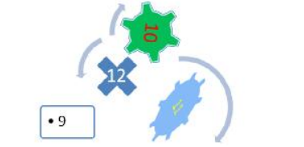

Fişa nr. 14
- Porniţi aplicaţia pentru prezentări, deschideţi o nouă prezentare şi inseraţi în aceasta şase noi diapozitive
- Primul diapozitiv va fi de tip titlu şi va conţine titlul „Excursii” şi subtitlul „Ofertă 2023”.
- Al doilea diapozitiv va fi de tip titlu şi text. Titlul – „Ofertă destinaţii turistice” va fi scris cu fontul Comic Sans MS, culoare verde, dimensiune 40. Textul va fi scris cu marcatori şi va conţine:
Destinaţii turistice în România
Destinaţii turistice în străinătate
Aplicaţi un efect de animaţie de intrare titlului, astfel încât acesta să apară din dreapta.
- Adăugați în diapozitivul doi o notă de subsol cu textul „Diapozitiv oferte”.
- În diapozitivul trei inseraţi următorul tabel:
| DESTINAŢII | PREŢ |
| Paris | 400 |
| Londra | 300 |
| Brasov | 100 |
- Folosind datele din tabel, inseraţi o diagramă de tip „linie”. Modificaţi culoarea de fundal a graficului în galben.
- Diapozitivul patru va conţine o imagine cu Marea Neagră. Transformaţi imaginea într-o imagine de tip Basic Shapes – Sun. Rotiţi imaginea cu un efect 3D pe axa y cu 30o .
- În diapozitivul cinci inseraţi o ilustraţie SmartArt după modelul celei de mai jos.

PowerPoint 2016 - SmartArt Graphics
- În diapozitivul şase inseraţi un buton de acţiune ce va face legătura cu primul diapozitiv și o formă predefinită de tip săgeată ce va face legătura cu al treilea diapozitiv.
- Adăugaţi întregii prezentări ca design template un şablon ales de dvs. şi aplicaţi un efect de tranziţie întregii prezentări. Salvaţi fişierul cu numele „Oferta de excursii”.